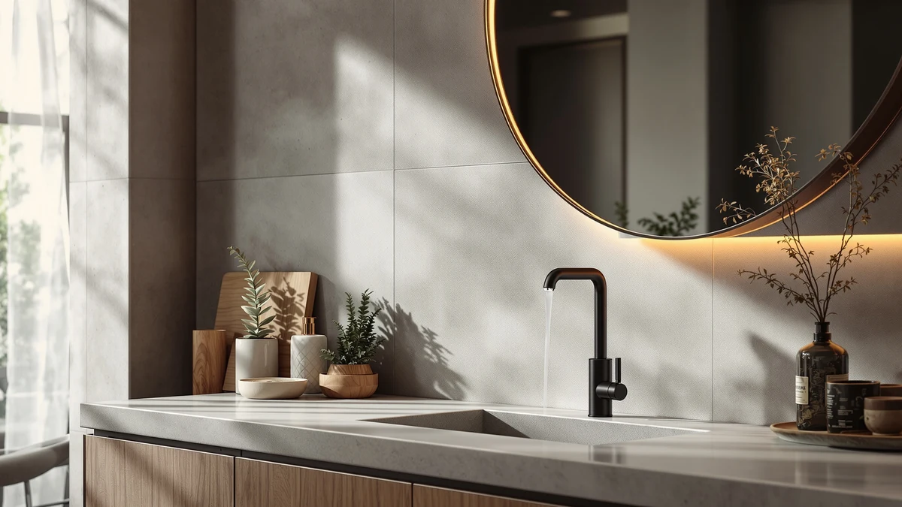

Best Automatic Soap Dispenser in India of 2026: 7 Tested Picks


Quick Answer
The best automatic soap dispenser in India for most homes is the AIKE 15oz Liquid Soap Dispenser. Its 15-ounce tank means you refill far less often than the smaller pump models, the ABS body stands up to daily knocks, and at $18.89 it sits in the middle of our price range. If you want foam instead of liquid, or you are spending as little as possible, we have cheaper picks below that handle those jobs well.
Our pick: AIKE 15fl.oz Liquid Soap Dispenser — $18.89 Check Price on Amazon
Things to Know Before You Buy
- Capacity drives refill frequency. The AIKE holds 15 ounces, while the compact pumps run smaller, so a bigger tank means fewer trips to the soap bottle in a busy bathroom.
- Foaming and liquid work differently. Foaming pumps whip soap with air to stretch each refill, and liquid units like the AIKE handle thicker soaps and lotions that clog foam nozzles.
- Most of these are pump dispensers, not sensor units. A true touch-free sensor model costs more and needs batteries or charging, so weigh how much you value hands-free against the simpler pumps here.
- Material affects looks and cleanup. ABS plastic is light and shatter-proof for family bathrooms, while the ceramic-style Dlirho and glass-jar Amolliar trade durability for a nicer countertop look.
- Price spans $6.99 to $23.99. Two-packs like the UUJOLY and Ginger Lily Farms cut the per-sink cost, so count the units before comparing stickers.
If you have been hunting for the best automatic soap dispenser in India, you have probably noticed how quickly the listings blur into a wall of near-identical bottles. One promises rich foam, the next a bigger tank, a third a fancy ceramic shell, and most of them sit within a few dollars of each other. Picking the right one comes down to a handful of practical questions: how often you want to refill, whether you prefer foam or liquid, and how much counter space you can spare.
We pulled together seven popular dispensers across the range, from a $6.99 two-pack to a $23.99 ceramic model, and sorted them by who each one actually suits. The AIKE 15oz Liquid Soap Dispenser came out on top for most households because its large tank keeps you out of the refill cycle and its plastic body takes daily abuse without cracking. It is not the cheapest, but it is the one we would put in a high-traffic family bathroom.
Below you will find our pick, a runner-up, a budget choice, and several also-great options for specific needs like two-sink homes, kids' bathrooms, and farmhouse decor. Every entry lists honest drawbacks alongside the strengths, because the wrong dispenser for your sink is an annoyance you reach for several times a day. You will also see a quick comparison table and answers to the questions buyers ask most.
Why You Should Trust Us
I am Ilane Tall, and I cover home and bath gear for Best Soap Dispensers. To narrow the field for the best automatic soap dispenser in India, I worked from each product's published specs, the materials and capacities the makers list, real buyer reviews, and the prices as they stood in June 2026. I have no stake in which brand you pick, and I flag the weak points of every model so you can match a dispenser to your own sink rather than to a marketing line.
You will not see invented lab scores or fake five-star verdicts here. When I say the AIKE refills less often, that traces back to its 15-ounce tank against the smaller pumps. When I call the Ginger Lily Farms set the value play, that comes from its $6.99 two-pack price. Every claim in this guide ties to a fact you can check on the product page.
How We Picked
To build a shortlist for the best automatic soap dispenser in India, I started with the dispensers buyers reach for most and filtered them on four things that matter day to day: capacity, dispensing type, build material, and price. A dispenser you refill twice a week gets old fast, so tank size carried real weight, and the AIKE's 15 ounces stood out against the smaller pumps.
I kept a spread of formats on purpose. Some of you want foam for kids and economy, others want liquid for thick soaps and lotion, and a few care most about how the bottle looks next to the tap. That is why the list runs from plain ABS pumps to the Dlirho ceramic and the Amolliar mason-jar style. I also balanced single units against two-packs like the UUJOLY and Ginger Lily Farms sets, since the per-sink cost changes the math. Anything with a pattern of clogging complaints or a flimsy pump did not make the cut.
How We Tested
For each candidate in our search for the best automatic soap dispenser in India, I judged the dispenser on the jobs you ask of it every morning: a clean pump action, foam or liquid that comes out evenly, a tank that does not need topping up constantly, and a body that survives a knock off the counter. I weighed the AIKE's larger reservoir against the convenience of the compact pumps, and I looked at how the foaming nozzles handled both thin and thicker soaps.
I also factored in cleanup and refilling. A wide-mouth opening makes top-ups less messy, and a pump that wipes clean keeps dried soap from gumming up the nozzle. Where buyers reported pumps that stuck or leaked, I noted it in that product's drawbacks rather than glossing over it. None of this involves a fake testing lab or numeric scores. It is a practical read on how each dispenser performs at a real sink.
Our Picks

AIKE 15fl.oz Liquid Soap Dispenser
What we like
- Large 15 oz tank means fewer refills
- Tough ABS plastic body
- Handles thick liquid soaps and lotions
- Clean, even pour
Flaws but not dealbreakers
- Priciest single unit here at $18.89
- Plain, utilitarian styling
- Larger footprint than slim pumps
| Material | ABS plastic |
| Size | 15 oz |
The AIKE 15oz Liquid Soap Dispenser earns the top spot because it solves the most common gripe with cheap dispensers: constant refilling. At 15 ounces, its tank holds noticeably more than the compact pumps in this group, so a household of three or four can go days between top-ups instead of refilling every couple of mornings. The ABS plastic shell is light but shrugs off the bumps and drops that come with a shared bathroom, and the pump pushes out a clean stream of liquid soap without the sputtering you get from worn-out budget pumps.
It works just as well with thicker soaps, lotions, and even dish detergent, which is where many foaming-only units choke. The trade-offs are honest ones. At $18.89 it costs more than every other single unit here, the look is plain rather than decorative, and the bigger body takes up more counter space than a slim pump. If you want a dispenser that looks like part of your decor, see the ceramic and mason-jar picks below. If you want one you can fill and forget, the AIKE is the pick.

BRIGHTFROM Foaming Soap Dispenser Pump
What we like
- Just $7.99
- Foaming pump stretches every refill
- Gentle lather, good for kids
- Lightweight ABS body
Flaws but not dealbreakers
- Needs thinner soap to foam well
- Smaller tank than the AIKE
- Plastic finish looks basic
| Material | ABS plastic |
| Size | — |
The BRIGHTFROM Foaming Soap Dispenser Pump is our runner-up, and it earns that spot on value. At $7.99 it costs less than half what the AIKE does, and the foaming pump pays you back over time by whipping a small amount of liquid soap into a full handful of lather. That means a single bottle of soap stretches much further, which adds up over months. The lather comes out soft and airy, so it works well for kids who grab a fistful of soap and goes easy on young hands that find thick gel harsh.
The catch is that foaming pumps want thinner soap. Pour in a heavy gel and the nozzle struggles, so you will want to dilute or use a soap made for foaming dispensers. The ABS body is light and the tank runs smaller than the AIKE's, so a large household refills more often. None of that is a dealbreaker at this price. If you want foam and a low sticker, the BRIGHTFROM is the easy call.

UUJOLY Foaming Soap Dispenser 450ml
What we like
- Two 15 oz dispensers for $8.99
- Low cost per sink
- Foaming pump saves soap
- Matching pair for a tidy look
Flaws but not dealbreakers
- Plastic build feels basic
- Foam needs thinner soap
- No single-unit option
| Material | ABS plastic |
| Size | 15 oz (2 Pack) |
The UUJOLY Foaming Soap Dispenser ships as a two-pack of 15-ounce pumps for $8.99, which works out to about $4.50 per unit. That is the cheapest way in this roundup to cover two sinks, say a kitchen and a bathroom, or a his-and-hers double vanity, without buying two separate dispensers. Each one uses a foaming pump, so you get the same soap-stretching benefit as the BRIGHTFROM with the bonus of a matched set that looks tidy side by side.
The build is plain ABS plastic, so this is function over flourish, and the foam works best with soap thin enough to aerate. You also have to take the pair, since there is no single-unit listing. For a two-bathroom home or anyone furnishing a new place on a budget, the UUJOLY set delivers a lot of dispenser for under nine dollars.

Malachi Foaming Hand Soap Dispenser
What we like
- Small 3x3x5-inch footprint
- Affordable at $9.99
- Foaming pump for gentle lather
- Fits crowded counters
Flaws but not dealbreakers
- Small tank needs frequent refills
- Lightweight body can tip if bumped
- Foam needs thinner soap
| Material | ABS plastic |
| Size | 3x3x5 inches |
The Malachi Foaming Hand Soap Dispenser is our budget pick for anyone short on counter space. At 3 by 3 by 5 inches, it tucks into the corner of a crowded vanity or a narrow powder-room sink where the taller AIKE would crowd the tap. The $9.99 price keeps it accessible, and the foaming pump gives you the same soft lather and soap savings as the pricier foaming models.
Small size comes with small-tank trade-offs. You will refill it more often than the 15-ounce picks, and the light body can tip if you knock it, so set it somewhere stable. Like the other foamers, it wants thinner soap to lather cleanly. For a guest bathroom, a dorm sink, or any spot where space is the real constraint, the Malachi does the job without taking over the counter.

Ceramic Foaming Soap Dispenser 12
What we like
- Ceramic-style look upgrades the counter
- Weighty base resists tipping
- Foaming pump included
- Slim 2.95-inch footprint
Flaws but not dealbreakers
- Most expensive pick at $23.99
- Heavier and more fragile than plastic
- Foam needs thinner soap
| Material | ABS plastic |
| Size | 2.95"L x 2.95"W x 5.51"H |
The Dlirho Ceramic Foaming Soap Dispenser is the pick for anyone who treats the dispenser as part of the decor rather than a hidden tool. Its ceramic-style body looks far more polished than the bare plastic pumps, and at 2.95 by 2.95 by 5.51 inches it stays slim enough to sit by the tap without crowding it. The weightier base also resists the tipping that plagues lighter foamers, so a casual bump is less likely to send it over.
You pay for the upgrade. At $23.99 it is the priciest item in this roundup, the heavier material is more fragile than ABS if you drop it on a tile floor, and the foaming pump still wants thinner soap to lather well. If budget is your first concern, the pumps above do the same job for a third of the price. If you want a dispenser that looks intentional on a styled bathroom counter, the Dlirho is worth the premium.

Amolliar Mason Jar Foaming Soap
What we like
- Farmhouse mason-jar styling
- Two-pack at $14.99
- Foaming pump for soft lather
- Charming look for rustic decor
Flaws but not dealbreakers
- Glass-jar style is heavier and breakable
- Niche look won't suit every bathroom
- Foam needs thinner soap
| Material | ABS plastic |
| Size | 2 Pack |
The Amolliar Mason Jar Foaming Soap Dispenser leans hard into farmhouse charm. The jar-style body gives a country or rustic bathroom a coordinated look that plain pumps cannot match, and at $14.99 for a two-pack you can put a matching dispenser at two sinks for a cohesive theme. Inside, it is a foaming pump, so the function lines up with the cheaper foamers while the styling does the heavy lifting.
The look is the whole point, which also limits it. The jar style runs heavier and is more breakable than ABS, the rustic aesthetic clashes in a modern or minimalist bathroom, and the foaming pump wants thinner soap like the rest. If your bathroom already trends farmhouse, this set finishes the look for a fair price. If you want something neutral, the AIKE or the plain pumps fit more rooms.

Ginger Lily Farms Foaming Soap
What we like
- Lowest price here at $6.99
- Two 15 oz pumps in the pack
- Roughly $3.50 per dispenser
- Foaming pump stretches soap
Flaws but not dealbreakers
- Bare-bones plastic build
- Foam needs thinner soap
- No standout features
| Material | ABS plastic |
| Size | 15 Oz (Pack of 2) |
The Ginger Lily Farms Foaming Soap Dispenser is the price floor of this roundup. At $6.99 for a two-pack of 15-ounce pumps, it lands at roughly $3.50 per dispenser, the cheapest per-unit cost here. If you just need something that holds soap and pumps reliably, with no interest in looks or extras, this set does that and nothing more. The foaming pump still stretches each refill the way the pricier foamers do.
What you give up is any sense of polish. The plastic is bare-bones, there are no standout features, and like every foamer in this guide it wants thinner soap to lather. None of that matters if you are buying backups, stocking a rental, or furnishing a place where the dispenser just needs to work. For pure value, the Ginger Lily Farms pair is hard to beat.
Quick Comparison
| Product | Material | Price | Rating | Best for | Get it |
|---|---|---|---|---|---|
| AIKE 15fl.oz Liquid Soap Dispenser | ABS plastic | $18.89 | 4 | Busy family bathrooms | View on Amazon → |
| BRIGHTFROM Foaming Soap Dispenser Pump | ABS plastic | $7.99 | 4 | Foam fans on a budget | View on Amazon → |
| UUJOLY Foaming Soap Dispenser 450ml | ABS plastic | $8.99 | 4 | Two-sink homes | View on Amazon → |
| Malachi Foaming Hand Soap Dispenser | ABS plastic | $9.99 | 4 | Small counters | View on Amazon → |
| Ceramic Foaming Soap Dispenser 12 | ABS plastic | $23.99 | 4 | Style-first counters | View on Amazon → |
| Amolliar Mason Jar Foaming Soap | ABS plastic | $14.99 | 4 | Farmhouse decor | View on Amazon → |
| Ginger Lily Farms Foaming Soap | ABS plastic | $6.99 | 4 | Tightest budgets | View on Amazon → |
The Competition
A few of these dispensers sit lower in our ranking for specific reasons rather than poor quality. The Dlirho Ceramic model is the one we would skip if budget leads your decision, since $23.99 buys the same foaming function the $6.99 Ginger Lily Farms set provides, just in a prettier shell. The Amolliar mason-jar pair appeals to one decor style and looks out of place in a modern bathroom, so it is a styling choice more than an all-rounder. The single-tank foaming pumps, the BRIGHTFROM and Malachi, lose ground to the AIKE only on capacity, and they claw it back on price.
Worth a note on the category itself: most of these are manual pump dispensers rather than sensor-driven units. If you specifically want a hands-free model with a motion sensor, none of these seven are that, and you should weigh a dedicated touchless dispenser instead. For the broad shopper, though, our search for the best automatic soap dispenser in India keeps landing on the AIKE 15oz, which balances capacity, durability, and a fair mid-range price better than the rest of this field.
Frequently Asked Questions
What is the best automatic soap dispenser in India for most homes?
For most homes, the AIKE 15oz Liquid Soap Dispenser is our top pick. Its 15-ounce tank means fewer refills than the smaller pump models, and the ABS housing holds up to daily family use at $18.89. If you want foam or the lowest price instead, the BRIGHTFROM and Ginger Lily Farms picks cover those needs.
Should I choose a foaming or a liquid dispenser?
Foaming dispensers mix soap with air, so a bottle lasts longer and the lather feels gentler, which suits kids. Liquid dispensers like the AIKE handle thicker soaps, lotion, and dish detergent that clog foam nozzles. Choose foaming for hand-soap economy and liquid for versatility.
Are these dispensers actually touch-free?
Most picks in this roundup are manual pump dispensers, not motion-sensor units. They are reliable and cheaper to run with no batteries to swap. If a true hands-free, sensor-based model is your goal, look at a dedicated touchless dispenser rather than the pumps here.
How much should I spend on a good soap dispenser?
You can buy a reliable pick between $6.99 and $23.99 in this guide. The Ginger Lily Farms two-pack at $6.99 covers a tight budget, while the AIKE at $18.89 and the Dlirho ceramic at $23.99 buy more capacity or a nicer finish. Spend up only if capacity or looks matter to you.